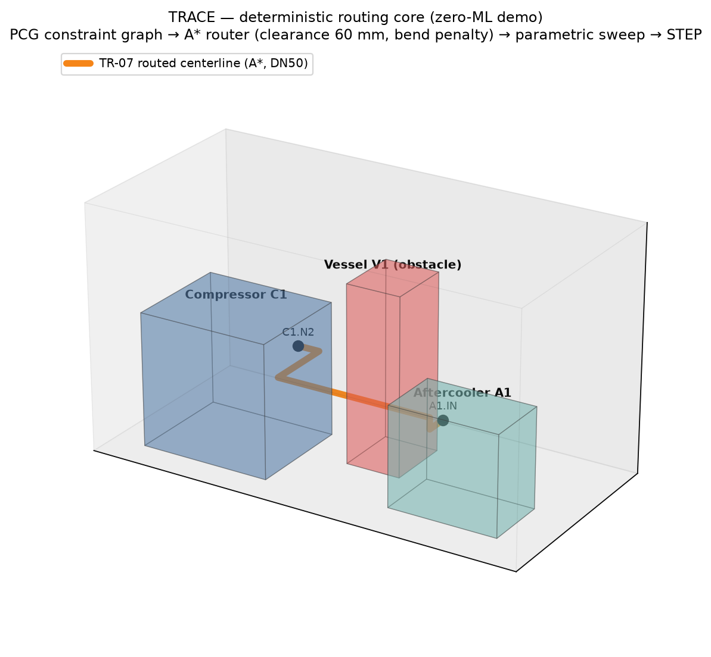
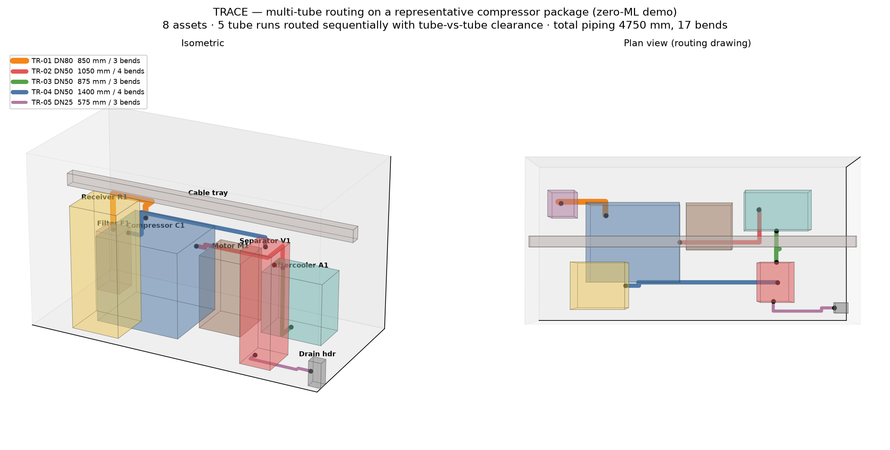
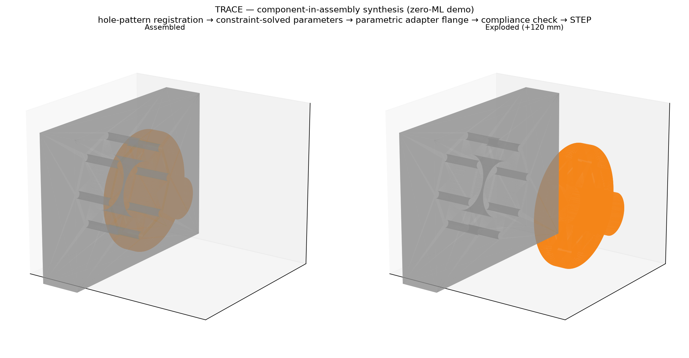

Routing solver demo
Compressor discharge → aftercooler inlet

Five runs routed sequentially with tube-vs-tube clearance

Constraint-solved component registered to housing hole pattern
HOLE-ALIGN
COVERAGE
ENVELOPE
PATTERN
